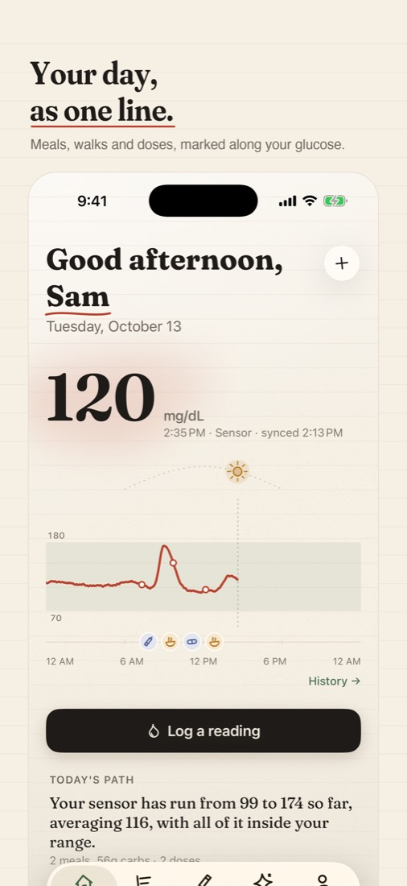
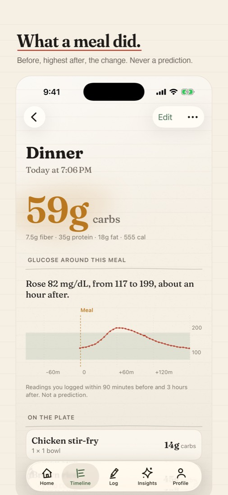
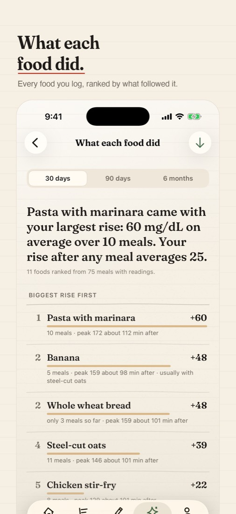

Companion: Diabetes Journal
A calm diabetes journal that draws your day as one line: glucose, meals, walks and doses, and what your own entries show.
Download on the App StoreFree, with Companion Plus for deeper insights. iPhone and Apple Watch, iOS 18 or later.



Private by design
There is no Companion account and no Companion server. Your journal stays on your iPhone. When you scan a product, only its barcode number is sent to Open Food Facts to look it up. The App Store lists Companion as Data Not Collected.
What it does
- A reading in two taps, or said out loud; meals from thousands of built-in foods, a barcode or a label
- Apple Health, your sensor's readings, and Dexcom or LibreView exports
- What your readings did after every meal, and which foods moved them most
- Medication reminders, a calm low-glucose screen, sick days and supplies
- A one-page report for your care team
Companion organises what you log. It doesn't diagnose, prescribe or calculate doses.